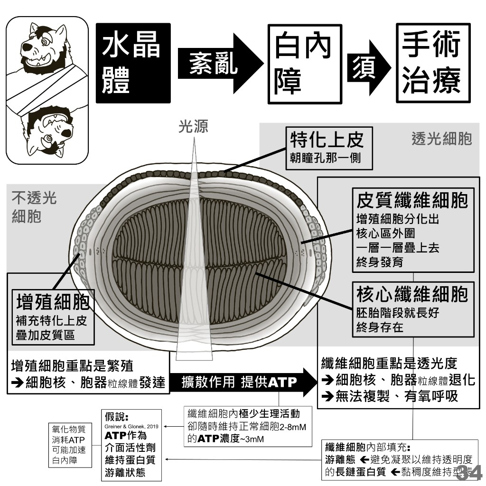
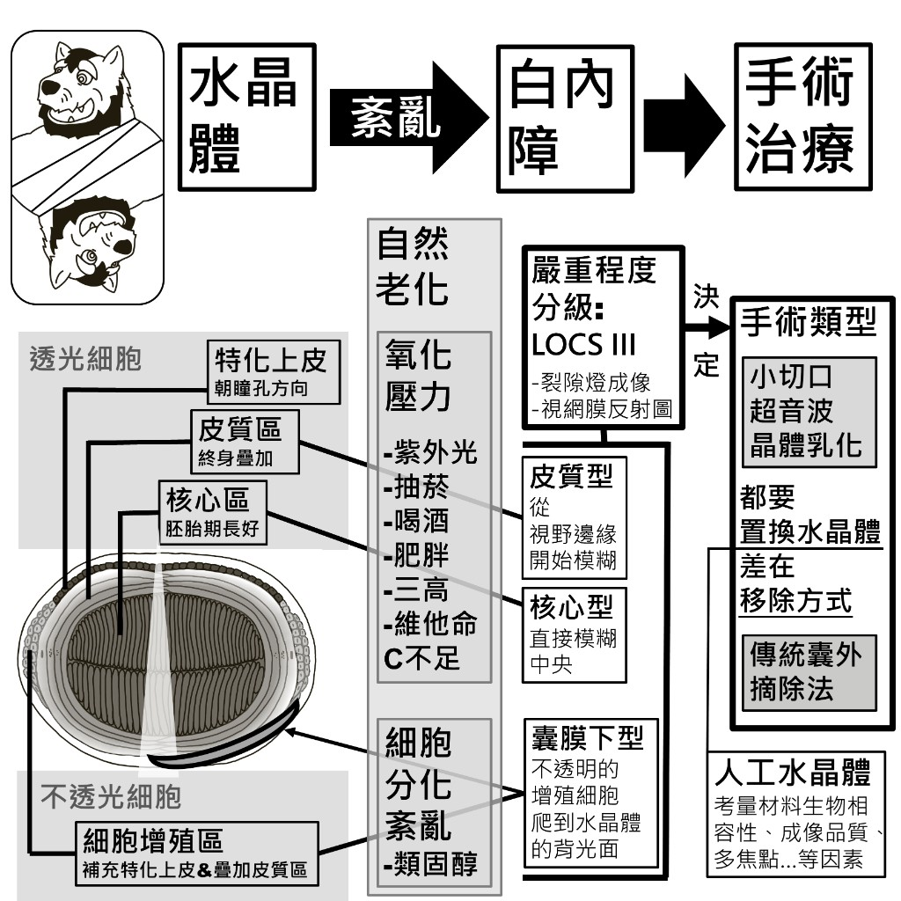
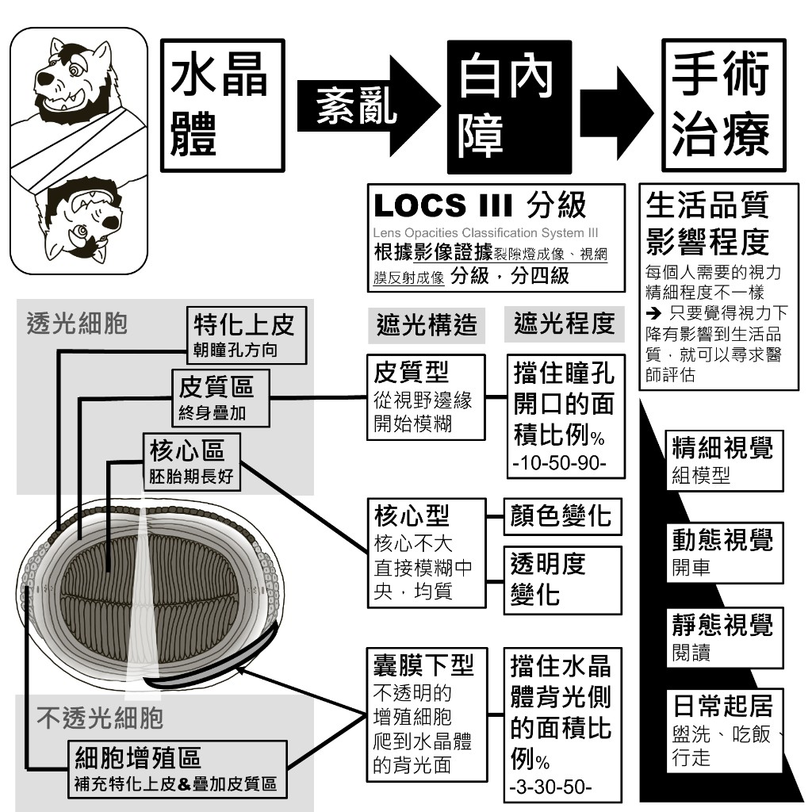
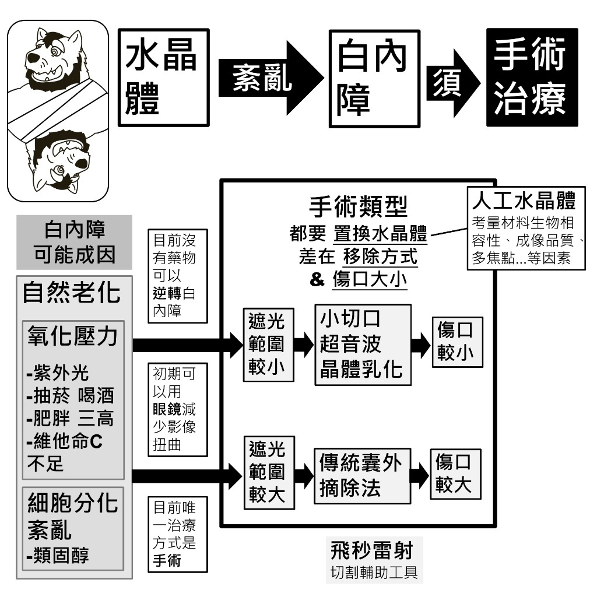
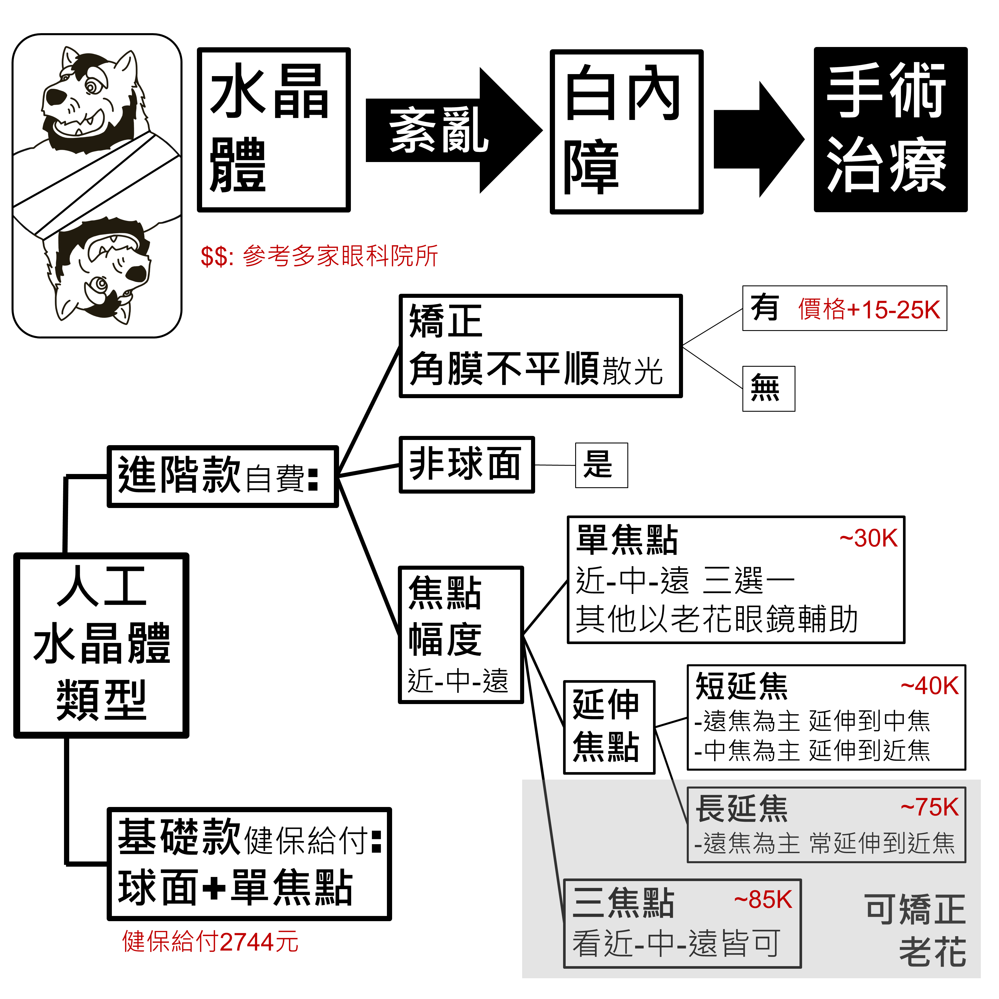
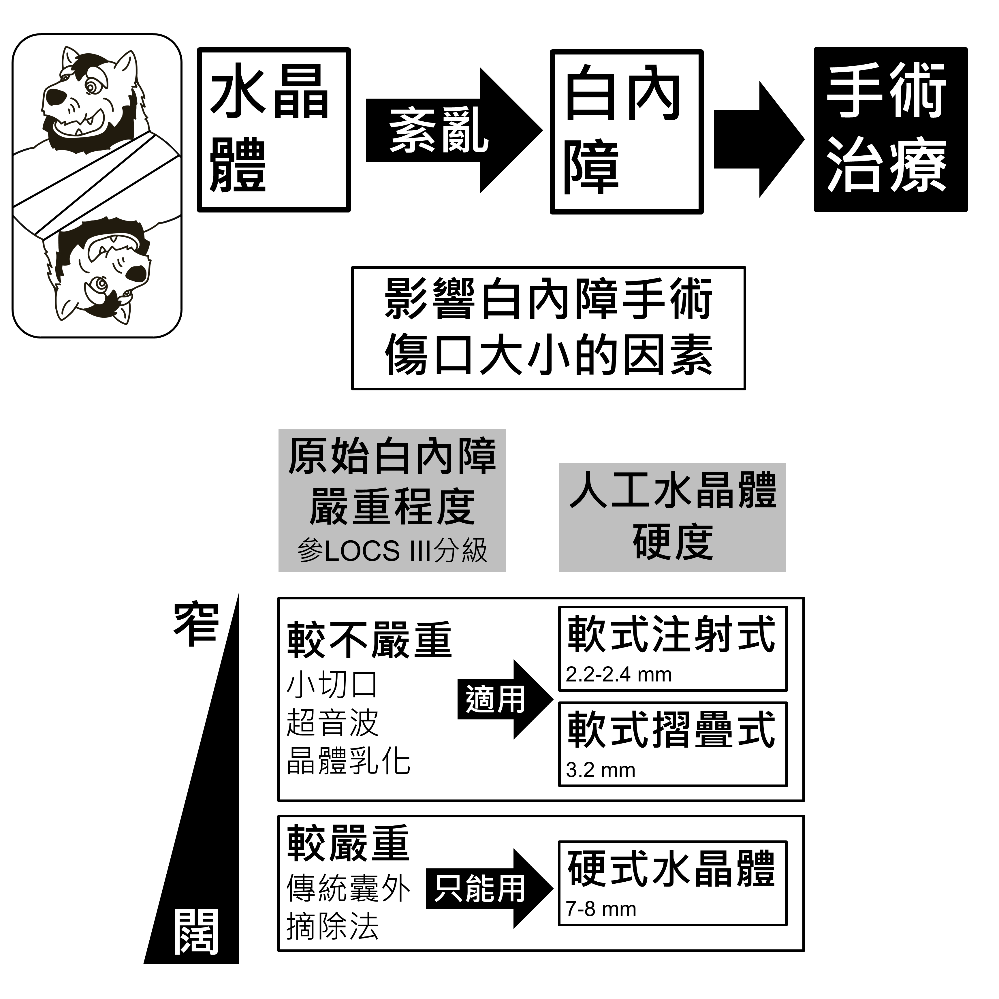

水晶體的構造：為什麼會變混濁
水晶體要同時做到「透光」和「能補充細胞」兩件互相衝突的事，於是分成兩種細胞：負責透光的纖維細胞，以及負責繁殖的增殖細胞。理解這個分工，就能理解白內障為什麼分成三種型別。

透光細胞
- 特化上皮：朝瞳孔那一側
- 皮質纖維細胞：由增殖細胞分化出來，在核心區外圍一層一層疊上去，終身發育
- 核心纖維細胞：胚胎階段就長好，終身存在
不透光細胞
- 增殖細胞：補充特化上皮、疊加皮質區
兩種細胞的取捨
| 細胞 | 重點 | 細胞核與胞器（粒線體） | 結果 |
|---|---|---|---|
| 增殖細胞 | 繁殖 | 發達 | 不透光 |
| 纖維細胞 | 透光度 | 退化 | 無法複製、無法有氧呼吸 |
因為纖維細胞沒辦法自己做有氧呼吸，ATP 是靠擴散作用從外側供應進來的。
纖維細胞內部靠什麼維持透明
- 長鏈蛋白質維持游離態：避免凝聚才能維持透明度；靠黏稠度維持型態
- ATP 濃度：纖維細胞內幾乎沒有生理活動，卻隨時維持在正常細胞（2–8 mM）的水準，約 3 mM
💡 假說（Greiner & Glonek, 2019）：ATP 在這裡是作為介面活性劑，維持蛋白質的游離狀態。若成立，則氧化物質消耗 ATP 就可能加速白內障。
成因與三種型別
白內障的成因主要是自然老化，而「哪一區的細胞先出問題」決定了你會先看不清楚哪裡。

自然老化的兩條路徑
- 氧化壓力：紫外光、抽菸、喝酒、肥胖、三高、維他命 C 不足
- 細胞分化紊亂：類固醇
三種型別
| 型別 | 出問題的構造 | 成因 | 症狀 |
|---|---|---|---|
| 皮質型 | 皮質區（終身疊加） | 氧化壓力 | 從視野邊緣開始模糊 |
| 核心型 | 核心區（胚胎期長好） | 氧化壓力 | 直接模糊中央 |
| 囊膜下型 | 細胞增殖區 | 細胞分化紊亂 | 不透明的增殖細胞爬到水晶體的背光面 |
嚴重程度分級與治療時機
臨床上用 LOCS III（Lens Opacities Classification System III）分級：根據影像證據（裂隙燈成像、視網膜反射成像）分成四級。

遮光程度怎麼衡量
| 遮光構造 | 遮光程度的衡量方式 |
|---|---|
| 皮質型 從視野邊緣開始模糊 | 擋住瞳孔開口的面積比例（%） 10 － 50 － 90 |
| 核心型 核心不大，直接模糊中央，均質 | 顏色變化 透明度變化 |
| 囊膜下型 不透明的增殖細胞爬到水晶體的背光面 | 擋住水晶體背光側的面積比例（%） 3 － 30 － 50 |
什麼時候該開刀：看生活品質
每個人需要的視力精細程度不一樣，所以判斷標準不是絕對的數值。
💡 只要覺得視力下降有影響到生活品質，就可以治療白內障。
| 視覺需求層級 | 例子 |
|---|---|
| 精細視覺 | 組模型 |
| 動態視覺 | 開車 |
| 靜態視覺 | 閱讀 |
| 日常起居 | 盥洗、吃飯、行走 |
治療方式與手術類型

三件事要先知道
- 目前沒有藥物可以逆轉白內障
- 初期可以用眼鏡減少影像扭曲
- 目前唯一的治療方式是手術
兩種手術方式
兩種手術都要置換水晶體，差別在移除方式與傷口大小。
| 遮光範圍 | 手術方式 | 傷口 |
|---|---|---|
| 較小 | 小切口超音波晶體乳化 | 較小 |
| 較大 | 傳統囊外摘除法 | 較大 |
- 飛秒雷射：切割的輔助工具
- 人工水晶體：考量材料生物相容性、成像品質、多焦點等因素
人工水晶體的類型與費用

基礎款：健保給付
- 規格：球面 ＋ 單焦點
- 健保給付：2,744 元
進階款：自費
進階款可以疊加三個面向的功能：是否矯正散光、是否為非球面、以及焦點幅度（近－中－遠）。
| 焦點幅度 | 說明 | 可矯正老花 | 自費參考 |
|---|---|---|---|
| 單焦點 | 近－中－遠三選一，其他距離以老花眼鏡輔助 | — | 約 30K |
| 短延焦 | 遠焦為主延伸到中焦；或中焦為主延伸到近焦 | — | 約 40K |
| 長延焦 | 遠焦為主，常延伸到近焦 | 可 | 約 75K |
| 三焦點 | 看近－中－遠皆可 | 可 | 約 85K |
加購功能
| 功能 | 選項 | 價差 |
|---|---|---|
| 矯正角膜不平順（散光） | 有 | ＋15–25K |
| 矯正角膜不平順（散光） | 無 | — |
| 非球面 | 是 | — |
💡 以上費用參考諾貝爾眼科，僅為市場行情區間，實際金額請向醫療院所確認最新資訊。
影響手術傷口大小的因素
傷口大小由兩件事一起決定：原始白內障的嚴重程度（參 LOCS III 分級）決定能用哪種手術，而手術方式又決定了能塞進去的人工水晶體硬度。

| 原始白內障嚴重程度 | 手術方式 | 人工水晶體硬度 | 傷口寬度 |
|---|---|---|---|
| 較不嚴重 | 小切口超音波晶體乳化 （適用） | 軟式注射式 | 2.2–2.4 mm |
| 軟式摺疊式 | 3.2 mm | ||
| 較嚴重 | 傳統囊外摘除法 （只能用） | 硬式水晶體 | 7–8 mm |